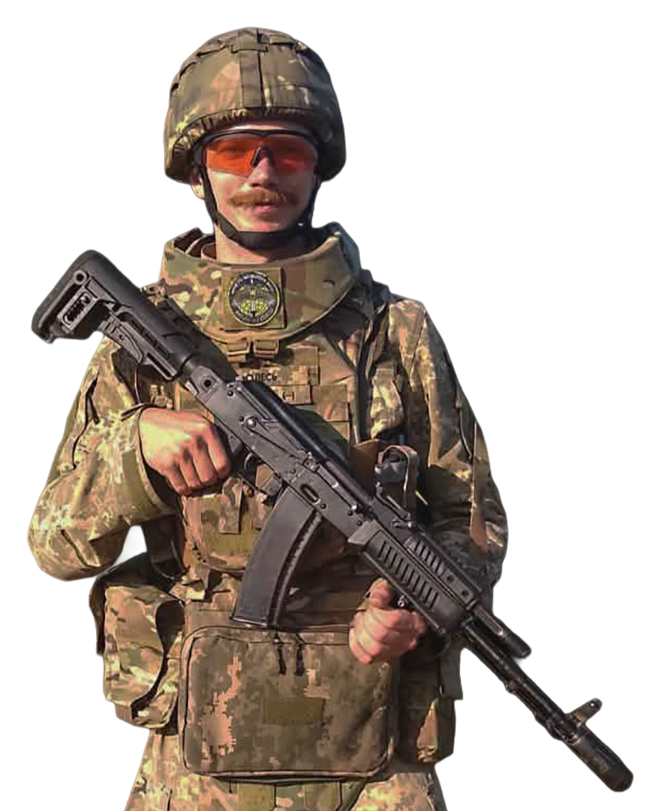

Від затертих сходів старовинного коледжу в центрі Львова до посічених дерев Серебрянського лісу на фронті простягається відстань, яку неможливо виміряти кілометрами. Олександр Новіков, львів’янин, міленіал і випускник спеціальності «Обслуговування та ремонт поліграфічного обладнання», подолав цю дистанцію власною особою. До 24 лютого 2022 року він планував повернутися до своєї рідної професії у сфері поліграфії. Сьогодні ж він — стрілець-піхотинець, який пройшов крізь страх перших днів вторгнення, важке поранення та трансформацію від замкнутого інтроверта до лідера й надійної опори для своїх побратимів.
Олександр провокує на розмову про найважливіше, залишаючи між рядками зачіпки для побудови суспільства, гідного своїх захисників.
Стіни, що дихають історією
Згадуючи часи до великої війни, Олександр зізнається: нині складно повірити, що колись існував мирний час. До Львівського поліграфічного коледжу його привела мама, яка розгледіла в синові задатки інженера.
Атмосфера коледжу назавжди закарбувалася в його пам’яті: старовинна будівля із широкими мурованими стінами, де завжди трималася приємна прохолода (крім зими, жартує Олександр), і затерті багатьма поколіннями спудеїв кам’яні та дерев’яні сходи. Але найбільше студента ще під час вступних іспитів вразило розташування: самісінький центр Львова, прекрасний вид із вікон на площу Митну, фонтан і ратушу вдалині.
Одні з найтепліших спогадів Олександра пов’язані з викладачами. Класний керівник Богдан Миколайович Репета став для їхньої групи майже батьком, а його спародійований вислів на одному з культурних заходів — «Небезпека, всюди небезпека» (він викладав БЖД) — Олександр із усмішкою згадує й досі. Запам’ятався і Роман Іванович Гермак зі своїм коронним запитанням «Так чи ні?»: його влучні вирази та легкість у викладанні профільних предметів дозволяли студентам набагато простіше засвоювати матеріал. А погляд молодої та красивої викладачки української мови і літератури Уляни Григорівни Голубник зачаровував усю групу. За словами Олександра, усі викладачі, хоч і були дуже різними, робили свою справу неймовірно віддано та професійно.
Їхню студентську групу так і називали — «механіки». Це був час постійних жартів на перервах і під час пар, дружньої підтримки та взаємовиручки, коли один міг зробити практичні роботи за трьох-чотирьох однокурсників. Олександр зі сміхом згадує, що різні методи списування й підготовки шпаргалок були справжнім мистецтвом. Колектив групи був повний харизматичних постатей: з пам’яті виринає гострий на слівце Дудич, староста Дума, картавий і задиркуватий Гутиряк, Мочурад, який робив курсові за гроші, Меленчук, котрий згодом зрозумів, що механіка — не його, і став мистецтвознавцем, а також дебелий добряк Слюзар… З багатьма з них він підтримує зв’язок і досі, намагаючись провідати давніх товаришів, коли приїжджає з війська у відпустку.
Хоча студентство — це загалом час формування особистості, фахівця та громадянина, Олександр упевнений: коледж заклав у ньому міцні базові технічні, культурні та суспільні знання. І навіть на війні поліграфія крокує з ним поруч. Він дуже любить читати й із великою пошаною ставиться до кожної книги як до «морської глибини». Це й не дивно, адже девіз коледжу — «Liber est mutus magister» («Книга — німий учитель»).
Від інтроверта до побратима: як війна вчить виходити з мушлі
Як ми вже згадували, на початку 2022 року Олександр планував повернутися в поліграфію. Але 24 лютого все змінило. Він свідомо пішов виконувати свій громадянський обов’язок, обійнявши солдатську посаду стрільця-піхотинця у 103-й окремій бригаді ТрО (нині — імені митрополита Андрея Шептицького).
Він відверто зізнається: до війни готовий не був. На початку служби страх оволодів ним, а відчуття власної безпорадності та браку військових знань сильно тиснуло. Проте так само, як у коледжі невпевнені першокурсники поступово набираються досвіду, Олександр крок за кроком опановував військову справу. «Коледж навчив вчитися. А у війську треба завжди вчитися», — зазначає боєць. Два місяці на блокпостах поблизу Львова стали часом першого вишколу: паралельно з чергуваннями солдати вчилися поводитися зі зброєю, відпрацьовували сценарії наступу й оборони, вибудовували бойові порядки. Це заклало фундамент для подальших боїв і постійного розвитку в лавах Сил оборони, який триває й досі.
Олександр за природою інтроверт, людина внутрішнього світу, якій комфортно наодинці із собою. Але армія змусила його змінитися. Військо — це живий організм, де кожен має знати своє місце й комунікувати з іншими незалежно від темпераменту. «Мені довелося вилізти зі своєї мушлі, і побратими в цьому дуже посприяли», — ділиться захисник.
Разом із бойовим вишколом кувалося й нове сприйняття власного «я» у збройному чині. Свій перший позивний — «Олесь» — він обрав свідомо, віддаючи шану витонченому лірику та драматургу епохи визвольних змагань Олександру Олесю. Це був вибір романтика, який ніс у собі трагічний ідеалізм українського відродження. До того ж це питомо українське скорочення його імені.
Невдовзі Олександр отримав важке осколкове поранення в Серебрянському лісі, який військові між собою називають Проклятим, Чорним або Кривавим лісом. За його словами, лише дяка Всевишньому, що осколки пройшли так, що вберегли йому життя і здоров’я, — фатум був прихильний не до всіх побратимів. Шлях відновлення був довгим: Лиман, Дніпро, Львів, Мукачево, Виноградів, Трускавець. Воїн безмежно вдячний усім лікарям і цивільним фахівцям.
Коли ж він перевівся до іншого підрозділу після поранення, бойове братерство охрестило його новим іменем — «Санчо». Бо він виявився тією людиною, що завжди готова без вагань стати до бою навіть із «вітряками». Мігель де Сервантес у своєму романі вклав у боротьбу Дон Кіхота та Санчо Панси з вітряками образ ілюзії, зіткнення шляхетної мрії з бездушною дійсністю світобудови. Проте в українських окопах ця класична метафора набуває іншого, сталевого гарту. У цьому пеклі Санчо — уособлення непохитної волі, яка матеріалізує ідею в удар. Для Олександра ця зміна імені підвела риску внутрішньої еволюції: від споглядання до проактивності.
«Німий учитель» на передовій
Окрім військових статутів і доктрин, Олександр постійно читає глибоку світоглядну літературу: наприклад, у праці «Подолати минуле» Ярослава Грицака він знаходить інтелектуальні ліки для загоєння історичних травм. Що ж стосується літератури «порядку денного», про настільну книжку «Сліди на дорозі» Валерія Ананьєва воїн додає ремарку: «характер війни змінився і змінюється дуже швидко, книга радше дала уявлення про пострадянське армійське життя і його виклики». Класичний «Захар Беркут» Івана Франка в окопах читається як вічний архетип української волі у спротиві східній орді. А дослідження «Справжня ціна вугілля на Донбасі» міцно заземлює думки в сувору, позбавлену романтики дійсність нашої рідної Донеччини, за яку точиться битва, бо саме там, у горнилі збройного чину, літери скидають із себе книжкову куряву мирного часу.
Війна зібрала в одних окопах людей з абсолютно різних суспільних прошарків. Знайти те, що роз’єднує, — мову, соціальний статус, час призову чи звання — дуже легко. Але Олександр переконаний, що шукати треба спільне. «Свої — це всі. Ми всі українці, і ми всі свої. Коли ти у війську, об’єднавчою є мета: здолати противника і повернутися додому живим».
Українське військо відроджує свій міф. Радянські традиції зникають у небутті, поступаючись місцем лицарським звичаям козаччини, армії УНР та УПА. І хоча підходи різняться, найміцнішим ритуалом єднання залишається містичний зв’язок із полеглими побратимами, спільний побут і братерські розмови біля вогнища.
«Прірва в нашому розумі» та світ, вартий героїв
Розмірковуючи про дистанцію між фронтом і тилом, Олександр категоричний: ця прірва існує переважно в нашому розумі. І військовий, і цивільний — це громадяни однієї країни — України. Тил і фронт — одне ціле, і ми тотально взаємозалежні. «Про війну годі щось пояснювати, бо зараз усе видно ледь не в онлайн-режимі. А про військових скажу одне: бережіть їх, вони бачили смерть, кров, піт і сльози».
Будь-яка підтримка — це зброя, що наближає перемогу. Але найвищим проявом солідарності він вважає тотальну готовність нації: цивільний вишкіл до військової справи та підтримку всього українського. Олександр згадує Олену Телігу — поетесу-вісницю, чиє життя і смерть стали найвищим втіленням безкомпромісного національного чину. Вона наголошувала, що важливо бути «цивільно відважним і сміливим» громадянином, і в її парадигмі це означало не пасивне співчуття, а тверду щоденну поставу в тилу та нетерпимість до ментального рабства.
Цю ж лінію воїн кристалізує через філософію Томаса Карлайла — шотландського мислителя, який стверджував, що рушієм історії є видатні особистості, проте їхній подвиг потребує духовно зрілого ґрунту. Олександр влучно наводить його сувору пересторогу: «Потрібний не лише герой, а й світ, вартий його, який не виглядав би як одна суцільна маса лакеїв. У протилежному випадку герої минуть для світу, а що найважливіше — і для нації — майже безслідно».
Який же він — цей світ, вартий героїв? На думку Олександра, це нація, що стоїть пліч-о-пліч у борні, яка шанує чин і плекає любов до свого коріння, про яке слід міркувати не тільки в минулому історичному детермінізмі, а й у теперішньому. Адже героїзм поростає билицею там, де суспільство обрало долю споживачів свободи, не здатне піднестися до рівня тих, хто проливає за нього кров.
«Для мене цей світ, ненька-Україна, від початку варта того, щоб за неї боротися. Наша боротьба дає нам маленький шанс на те, що ми змінимося на краще. Щоб українці жили у вільній державі, працювали за гідну зарплату, щоб діяли прозорі закони і чесні суди, була якісна освіта, вільне підприємництво. Щоб діяв принцип: держава для людей, а люди — для держави. Допоки в нас є своя держава, є шанс творити її так, як ми захочемо. Але головна мета зараз — дати відсіч противникові, який хоче нас цього права позбавити», — підсумовує воїн.
Замість епілогу: звернення до покоління, яке творитиме майбутнє
Свій досвід Олександр Новіков перетворює на щиру настанову для тих, хто зараз сидить за партами його рідного коледжу: «Я, котрого можна віднести до покоління міленіалів, хочу звернутися до молодого покоління. Живіть і радійте життю, ловіть найкращі миті свого студентського часу, навчайтеся і думайте трохи наперед (бо я так не робив і дещо проґавив). Трохи відсуньте ваші телефони і “компуктери”. Хай ваші очі дивляться в очі однокурсникові, другові, викладачеві. Хай ваші вуха слухають не тільки постійну шумну музику в навушниках, а й цей світ: шум фонтану за вікнами аудиторії, лепет голубів на площі Митній, незрозуміле бубоніння вашого одногрупника, ніжний шепіт вашого першого кохання. Читайте книги, а не тільки сторіз. Ходіть гуляти на природу чи в місто, а не губіться тільки в онлайн-іграх. Ви — частина нашого суспільства. Вирішальний крок у майбутнє України зробить саме молоде покоління. Слава Україні!»
Підготувала Марічка Коломієць, студентка спеціальності «Журналістика»